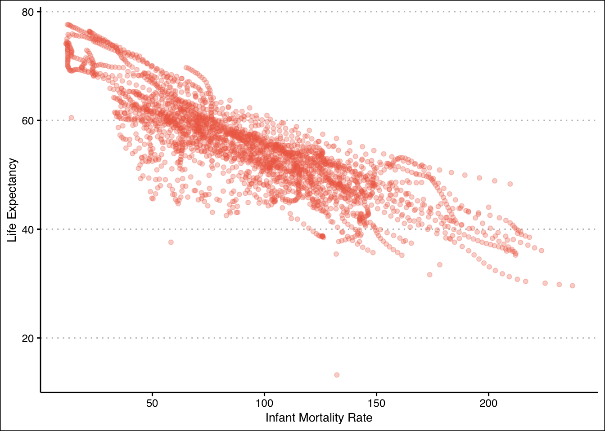
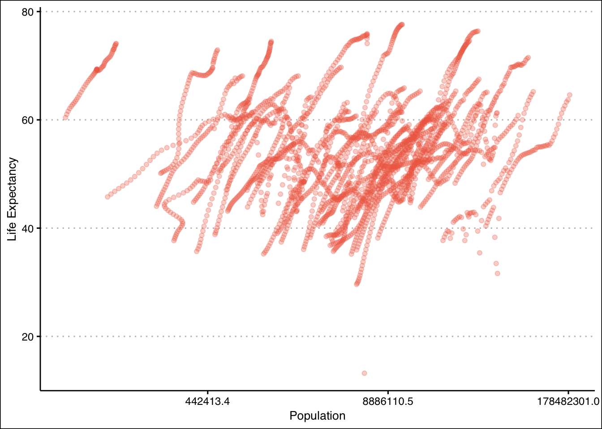
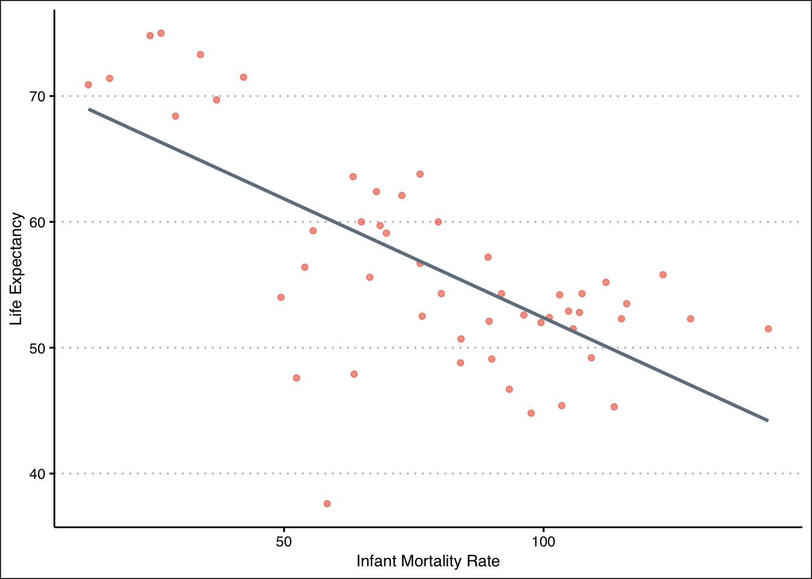
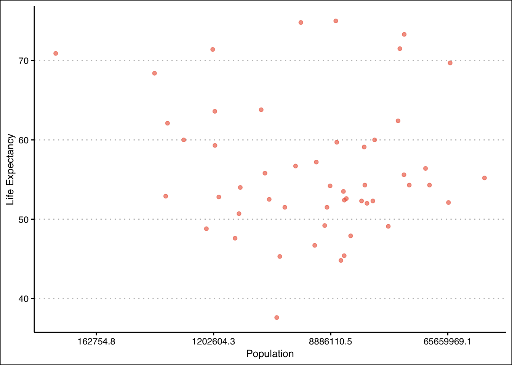
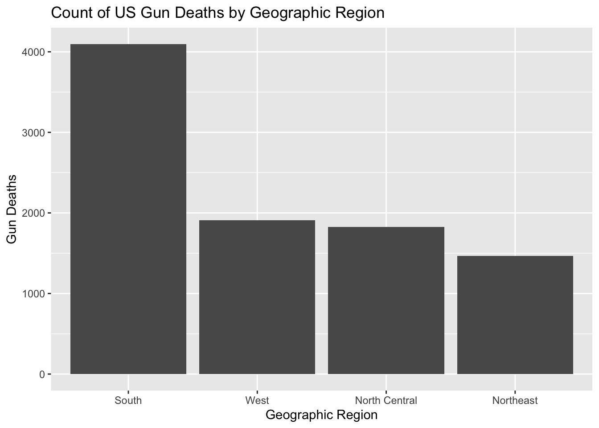
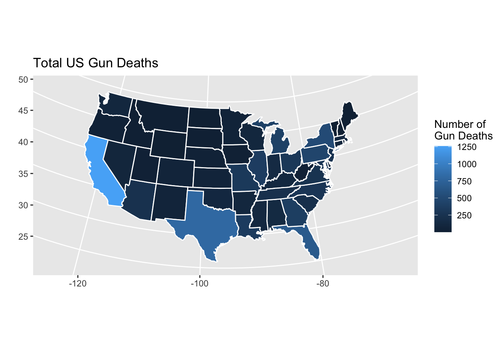
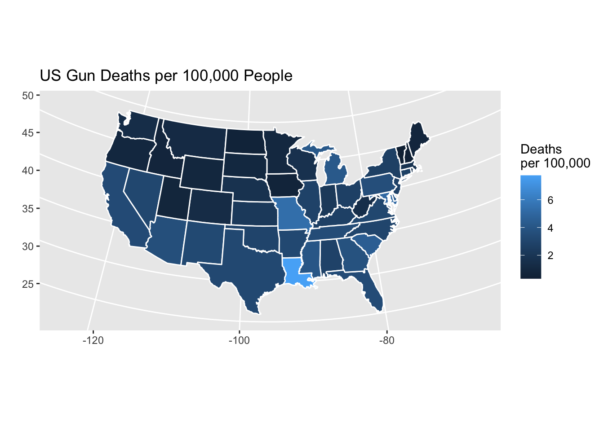
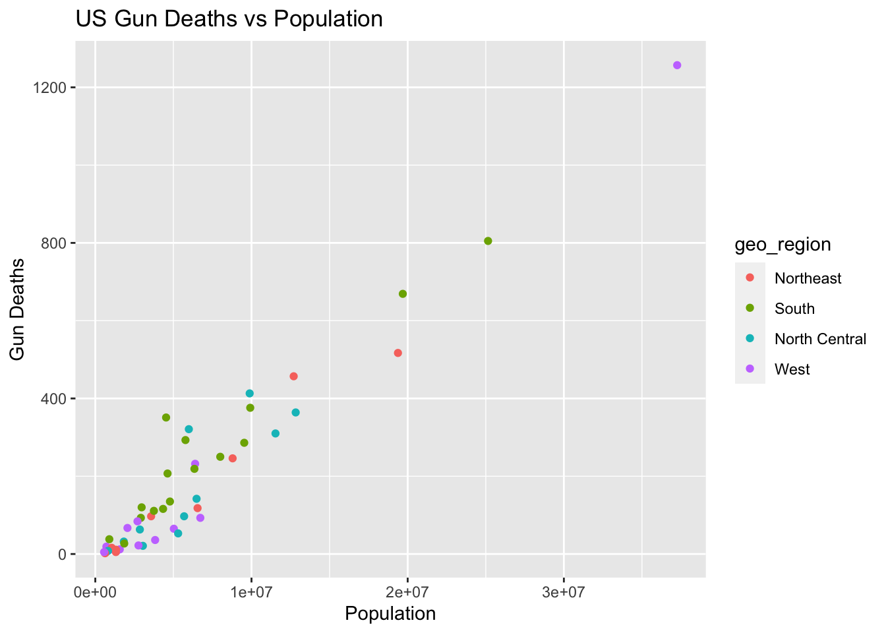
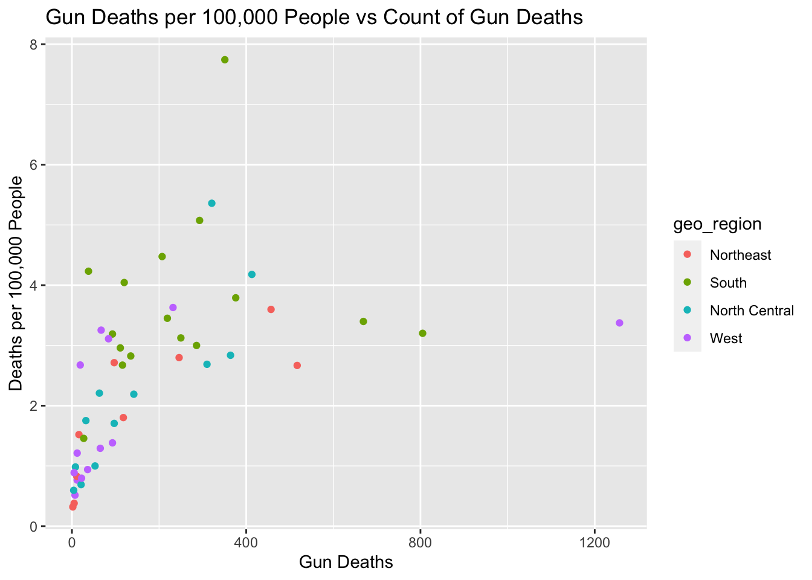
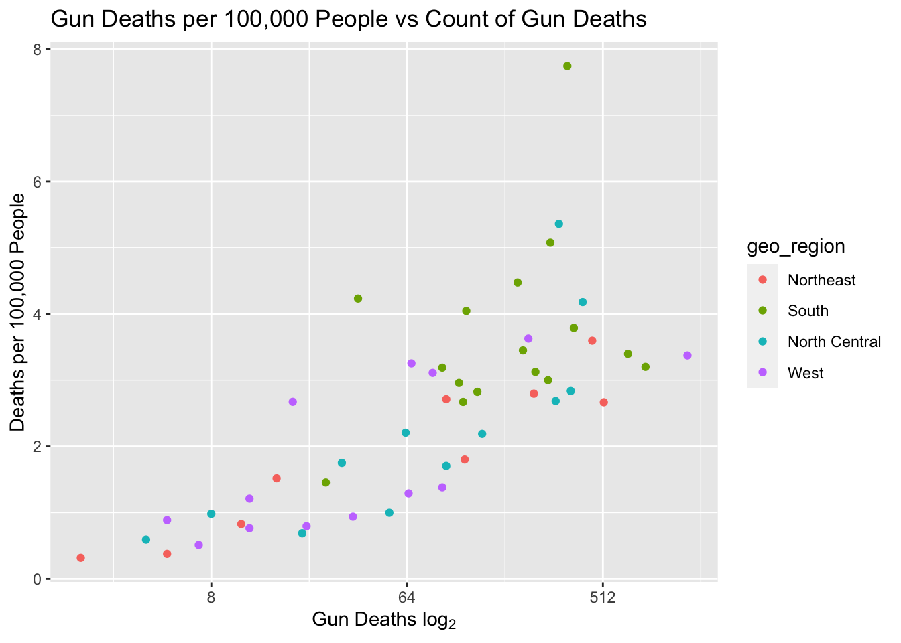

# load and install necessary packages for notebook
pacman::p_load(dslabs,
ggplot2,
ggthemes,
skimr,
tidyverse)R Coding Exercise
# look at help file for gapminder
help(gapminder)# get an overview of the data
str(gapminder)'data.frame': 10545 obs. of 9 variables:
$ country : Factor w/ 185 levels "Albania","Algeria",..: 1 2 3 4 5 6 7 8 9 10 ...
$ year : int 1960 1960 1960 1960 1960 1960 1960 1960 1960 1960 ...
$ infant_mortality: num 115.4 148.2 208 NA 59.9 ...
$ life_expectancy : num 62.9 47.5 36 63 65.4 ...
$ fertility : num 6.19 7.65 7.32 4.43 3.11 4.55 4.82 3.45 2.7 5.57 ...
$ population : num 1636054 11124892 5270844 54681 20619075 ...
$ gdp : num NA 1.38e+10 NA NA 1.08e+11 ...
$ continent : Factor w/ 5 levels "Africa","Americas",..: 4 1 1 2 2 3 2 5 4 3 ...
$ region : Factor w/ 22 levels "Australia and New Zealand",..: 19 11 10 2 15 21 2 1 22 21 ...# get a summary of the data
summary(gapminder) country year infant_mortality life_expectancy
Albania : 57 Min. :1960 Min. : 1.50 Min. :13.20
Algeria : 57 1st Qu.:1974 1st Qu.: 16.00 1st Qu.:57.50
Angola : 57 Median :1988 Median : 41.50 Median :67.54
Antigua and Barbuda: 57 Mean :1988 Mean : 55.31 Mean :64.81
Argentina : 57 3rd Qu.:2002 3rd Qu.: 85.10 3rd Qu.:73.00
Armenia : 57 Max. :2016 Max. :276.90 Max. :83.90
(Other) :10203 NA's :1453
fertility population gdp continent
Min. :0.840 Min. :3.124e+04 Min. :4.040e+07 Africa :2907
1st Qu.:2.200 1st Qu.:1.333e+06 1st Qu.:1.846e+09 Americas:2052
Median :3.750 Median :5.009e+06 Median :7.794e+09 Asia :2679
Mean :4.084 Mean :2.701e+07 Mean :1.480e+11 Europe :2223
3rd Qu.:6.000 3rd Qu.:1.523e+07 3rd Qu.:5.540e+10 Oceania : 684
Max. :9.220 Max. :1.376e+09 Max. :1.174e+13
NA's :187 NA's :185 NA's :2972
region
Western Asia :1026
Eastern Africa : 912
Western Africa : 912
Caribbean : 741
South America : 684
Southern Europe: 684
(Other) :5586 # determine gapminder object type
class(gapminder)[1] "data.frame"# create an African data only subset
africandata <- gapminder %>% filter(continent == "Africa")
str(africandata)'data.frame': 2907 obs. of 9 variables:
$ country : Factor w/ 185 levels "Albania","Algeria",..: 2 3 18 22 26 27 29 31 32 33 ...
$ year : int 1960 1960 1960 1960 1960 1960 1960 1960 1960 1960 ...
$ infant_mortality: num 148 208 187 116 161 ...
$ life_expectancy : num 47.5 36 38.3 50.3 35.2 ...
$ fertility : num 7.65 7.32 6.28 6.62 6.29 6.95 5.65 6.89 5.84 6.25 ...
$ population : num 11124892 5270844 2431620 524029 4829291 ...
$ gdp : num 1.38e+10 NA 6.22e+08 1.24e+08 5.97e+08 ...
$ continent : Factor w/ 5 levels "Africa","Americas",..: 1 1 1 1 1 1 1 1 1 1 ...
$ region : Factor w/ 22 levels "Australia and New Zealand",..: 11 10 20 17 20 5 10 20 10 10 ...summary(africandata) country year infant_mortality life_expectancy
Algeria : 57 Min. :1960 Min. : 11.40 Min. :13.20
Angola : 57 1st Qu.:1974 1st Qu.: 62.20 1st Qu.:48.23
Benin : 57 Median :1988 Median : 93.40 Median :53.98
Botswana : 57 Mean :1988 Mean : 95.12 Mean :54.38
Burkina Faso: 57 3rd Qu.:2002 3rd Qu.:124.70 3rd Qu.:60.10
Burundi : 57 Max. :2016 Max. :237.40 Max. :77.60
(Other) :2565 NA's :226
fertility population gdp continent
Min. :1.500 Min. : 41538 Min. :4.659e+07 Africa :2907
1st Qu.:5.160 1st Qu.: 1605232 1st Qu.:8.373e+08 Americas: 0
Median :6.160 Median : 5570982 Median :2.448e+09 Asia : 0
Mean :5.851 Mean : 12235961 Mean :9.346e+09 Europe : 0
3rd Qu.:6.860 3rd Qu.: 13888152 3rd Qu.:6.552e+09 Oceania : 0
Max. :8.450 Max. :182201962 Max. :1.935e+11
NA's :51 NA's :51 NA's :637
region
Eastern Africa :912
Western Africa :912
Middle Africa :456
Northern Africa :342
Southern Africa :285
Australia and New Zealand: 0
(Other) : 0 # create mortality and life expectancy subset dataframe
mortexp <- africandata %>% select(infant_mortality, life_expectancy)
str(mortexp)'data.frame': 2907 obs. of 2 variables:
$ infant_mortality: num 148 208 187 116 161 ...
$ life_expectancy : num 47.5 36 38.3 50.3 35.2 ...summary(mortexp) infant_mortality life_expectancy
Min. : 11.40 Min. :13.20
1st Qu.: 62.20 1st Qu.:48.23
Median : 93.40 Median :53.98
Mean : 95.12 Mean :54.38
3rd Qu.:124.70 3rd Qu.:60.10
Max. :237.40 Max. :77.60
NA's :226 # create population and life expectancy subset dataframe
popexp <- africandata %>% select(population, life_expectancy)
str(popexp)'data.frame': 2907 obs. of 2 variables:
$ population : num 11124892 5270844 2431620 524029 4829291 ...
$ life_expectancy: num 47.5 36 38.3 50.3 35.2 ...summary(popexp) population life_expectancy
Min. : 41538 Min. :13.20
1st Qu.: 1605232 1st Qu.:48.23
Median : 5570982 Median :53.98
Mean : 12235961 Mean :54.38
3rd Qu.: 13888152 3rd Qu.:60.10
Max. :182201962 Max. :77.60
NA's :51 #creating a plot of infant mortality and life expectancy
mortexp %>%
ggplot(aes(x = infant_mortality, y = life_expectancy)) +
geom_point(alpha = 0.3, color = "coral2", na.rm = TRUE) +
xlab("Infant Mortality Rate") + ylab("Life Expectancy") +
theme_clean()
#creating a plot of population and life expectancy
popexp %>%
ggplot(aes(x = population, y = life_expectancy)) +
geom_point(alpha = 0.3, color = "coral2", na.rm = TRUE) +
xlab("Population") + ylab("Life Expectancy") +
scale_x_continuous(trans = "log") +
theme_clean()
Looking at the above plots we can observe nearly linearly connected streaks in the data which corresponds with the autocorrelative nature of the annual data found in our original dataset.
# examine a subset dataframe that only contains missing infant mortality rows
summary(africandata %>% filter(is.na(infant_mortality))) country year infant_mortality life_expectancy
Equatorial Guinea: 23 Min. :1960 Min. : NA Min. :35.71
Angola : 19 1st Qu.:1963 1st Qu.: NA 1st Qu.:42.07
Gabon : 19 Median :1968 Median : NA Median :46.02
Djibouti : 17 Mean :1978 Mean :NaN Mean :48.92
Guinea-Bissau : 17 3rd Qu.:1978 3rd Qu.: NA 3rd Qu.:52.70
South Africa : 15 Max. :2016 Max. : NA Max. :77.60
(Other) :116 NA's :226
fertility population gdp continent
Min. :4.380 Min. : 83636 Min. :9.997e+07 Africa :226
1st Qu.:5.680 1st Qu.: 257709 1st Qu.:1.019e+09 Americas: 0
Median :6.360 Median : 686155 Median :1.899e+09 Asia : 0
Mean :6.306 Mean : 4935222 Mean :1.373e+10 Europe : 0
3rd Qu.:6.945 3rd Qu.: 5814296 3rd Qu.:5.942e+09 Oceania : 0
Max. :7.430 Max. :46144154 Max. :7.600e+10
NA's :51 NA's :51 NA's :159
region
Middle Africa :83
Eastern Africa :62
Western Africa :50
Southern Africa :25
Northern Africa : 6
Australia and New Zealand: 0
(Other) : 0 # create subset of African data for the year 2000
africandata2000 <- africandata %>% filter(year == 2000)
str(africandata2000)'data.frame': 51 obs. of 9 variables:
$ country : Factor w/ 185 levels "Albania","Algeria",..: 2 3 18 22 26 27 29 31 32 33 ...
$ year : int 2000 2000 2000 2000 2000 2000 2000 2000 2000 2000 ...
$ infant_mortality: num 33.9 128.3 89.3 52.4 96.2 ...
$ life_expectancy : num 73.3 52.3 57.2 47.6 52.6 46.7 54.3 68.4 45.3 51.5 ...
$ fertility : num 2.51 6.84 5.98 3.41 6.59 7.06 5.62 3.7 5.45 7.35 ...
$ population : num 31183658 15058638 6949366 1736579 11607944 ...
$ gdp : num 5.48e+10 9.13e+09 2.25e+09 5.63e+09 2.61e+09 ...
$ continent : Factor w/ 5 levels "Africa","Americas",..: 1 1 1 1 1 1 1 1 1 1 ...
$ region : Factor w/ 22 levels "Australia and New Zealand",..: 11 10 20 17 20 5 10 20 10 10 ...summary(africandata2000) country year infant_mortality life_expectancy
Algeria : 1 Min. :2000 Min. : 12.30 Min. :37.60
Angola : 1 1st Qu.:2000 1st Qu.: 60.80 1st Qu.:51.75
Benin : 1 Median :2000 Median : 80.30 Median :54.30
Botswana : 1 Mean :2000 Mean : 78.93 Mean :56.36
Burkina Faso: 1 3rd Qu.:2000 3rd Qu.:103.30 3rd Qu.:60.00
Burundi : 1 Max. :2000 Max. :143.30 Max. :75.00
(Other) :45
fertility population gdp continent
Min. :1.990 Min. : 81154 Min. :2.019e+08 Africa :51
1st Qu.:4.150 1st Qu.: 2304687 1st Qu.:1.274e+09 Americas: 0
Median :5.550 Median : 8799165 Median :3.238e+09 Asia : 0
Mean :5.156 Mean : 15659800 Mean :1.155e+10 Europe : 0
3rd Qu.:5.960 3rd Qu.: 17391242 3rd Qu.:8.654e+09 Oceania : 0
Max. :7.730 Max. :122876723 Max. :1.329e+11
region
Eastern Africa :16
Western Africa :16
Middle Africa : 8
Northern Africa : 6
Southern Africa : 5
Australia and New Zealand: 0
(Other) : 0 #creating a plot of infant mortality and life expectancy for 2000
africandata2000 %>%
ggplot(aes(x = infant_mortality, y = life_expectancy)) +
geom_point(alpha = 0.65, color = "coral2") +
geom_smooth(method = "lm", formula = y ~ x, se = FALSE, color = "slategrey") +
xlab("Infant Mortality Rate") + ylab("Life Expectancy") +
theme_clean()
#creating a plot of population and life expectancy for 2000
africandata2000 %>%
ggplot(aes(x = population, y = life_expectancy)) +
geom_point(alpha = 0.65, color = "coral2") +
xlab("Population") + ylab("Life Expectancy") +
scale_x_continuous(trans = "log") +
theme_clean()
When we examine a single year (in this case the year 2000) we observe that there is a negative relationship between infant mortality rate and life expectancy.
# fit linear model of life expectancy as a function of infant mortality
fit1 <- lm(life_expectancy ~ infant_mortality, data = africandata2000)
summary(fit1)
Call:
lm(formula = life_expectancy ~ infant_mortality, data = africandata2000)
Residuals:
Min 1Q Median 3Q Max
-22.6651 -3.7087 0.9914 4.0408 8.6817
Coefficients:
Estimate Std. Error t value Pr(>|t|)
(Intercept) 71.29331 2.42611 29.386 < 2e-16 ***
infant_mortality -0.18916 0.02869 -6.594 2.83e-08 ***
---
Signif. codes: 0 '***' 0.001 '**' 0.01 '*' 0.05 '.' 0.1 ' ' 1
Residual standard error: 6.221 on 49 degrees of freedom
Multiple R-squared: 0.4701, Adjusted R-squared: 0.4593
F-statistic: 43.48 on 1 and 49 DF, p-value: 2.826e-08# fit linear model of life expectancy as a function of population
fit2 <- lm(life_expectancy ~ population, data = africandata2000)
summary(fit2)
Call:
lm(formula = life_expectancy ~ population, data = africandata2000)
Residuals:
Min 1Q Median 3Q Max
-18.429 -4.602 -2.568 3.800 18.802
Coefficients:
Estimate Std. Error t value Pr(>|t|)
(Intercept) 5.593e+01 1.468e+00 38.097 <2e-16 ***
population 2.756e-08 5.459e-08 0.505 0.616
---
Signif. codes: 0 '***' 0.001 '**' 0.01 '*' 0.05 '.' 0.1 ' ' 1
Residual standard error: 8.524 on 49 degrees of freedom
Multiple R-squared: 0.005176, Adjusted R-squared: -0.01513
F-statistic: 0.2549 on 1 and 49 DF, p-value: 0.6159Based on linear models fit against both population and infant mortality we can see that we have a statistically significant relationship between infant mortality and life expectancy, but no such similarly significant relationship with population. The former relationship makes intuitive sense – the more deaths as an infant the more downwardly skewed you would expect the life expectancy of that country.
This section contributed by William Hyltin
For this part of the exercise we will look at the “murders” dataset, which contains gun murder data from FBI report from the year 2010.
#importing two more packages to help with choropleth plot later
pacman::p_load(maps,
mapproj)Observing the help file to understand the variables in the dataset.
help(murders)Understanding the structure of the data.
str(murders)'data.frame': 51 obs. of 5 variables:
$ state : chr "Alabama" "Alaska" "Arizona" "Arkansas" ...
$ abb : chr "AL" "AK" "AZ" "AR" ...
$ region : Factor w/ 4 levels "Northeast","South",..: 2 4 4 2 4 4 1 2 2 2 ...
$ population: num 4779736 710231 6392017 2915918 37253956 ...
$ total : num 135 19 232 93 1257 ...Understanding the distribution and basics stats of the variables in the dataset.
summary(murders) state abb region population
Length:51 Length:51 Northeast : 9 Min. : 563626
Class :character Class :character South :17 1st Qu.: 1696962
Mode :character Mode :character North Central:12 Median : 4339367
West :13 Mean : 6075769
3rd Qu.: 6636084
Max. :37253956
total
Min. : 2.0
1st Qu.: 24.5
Median : 97.0
Mean : 184.4
3rd Qu.: 268.0
Max. :1257.0 Finally, confirming the data type is in fact a data frame.
class(murders)[1] "data.frame"The “total” is somewhat non-descriptive, so I rename the variable so that I don’t mistake it for population or some other representation of the data (e.g. the dataset is gun murder but there would be no way to tell that its gun murder from just the data or columns). Also, given the geographic nature of the data I will want to play with a choropleth map. The maps package I brought in earlier will have some conflicts with a column named “region,” so we rename it here while we’re under the hood.
# renaming "total" column and region column, because region column will have later conflicts
d1 <- murders %>% rename(gun_deaths = total, geo_region = region)
# names function to get the names of the columns.
names(d1)[1] "state" "abb" "geo_region" "population" "gun_deaths"Jumping ahead a bit, there are likely some problems with just using a count of gun deaths alone. factors like population, which is included, will play a part. A standard measurement for deaths is number of deaths per 100,000 people, and while there is generally more that goes into the calculation of this metric, we can use a simple version here by dividing gun_deaths by population and multiplying by 100,000. Again, while we are under the hood, we make change the state variable to lower case, which will again help when we merge to our map data, and we change the geo_region variable to a factor, which helps with visualizations later on.
# new column with gun deaths per 100,000 in population
# lower case state names for later merge for visualization
#region as a factor variable
d2 <- d1 %>% mutate(
dpp = gun_deaths / population * 100000,
state = tolower(state),
geo_region = as.factor(geo_region)
)As a quick check for outliers and to make sure the previous mutates worked as expected, we can take the top 10 values from the dataset, ordered in descending order by dpp. We find one in District of Columbia, which is more than double the next highest value in deaths per 100,000 people. Given its generally lower population (though worth noting, not lowest), and its unique status of not being a state, it seems a little unfair to compare states to it. I made the decision to exclude it here.
d2 %>% arrange(-dpp) %>% head(10) state abb geo_region population gun_deaths dpp
1 district of columbia DC South 601723 99 16.452753
2 louisiana LA South 4533372 351 7.742581
3 missouri MO North Central 5988927 321 5.359892
4 maryland MD South 5773552 293 5.074866
5 south carolina SC South 4625364 207 4.475323
6 delaware DE South 897934 38 4.231937
7 michigan MI North Central 9883640 413 4.178622
8 mississippi MS South 2967297 120 4.044085
9 georgia GA South 9920000 376 3.790323
10 arizona AZ West 6392017 232 3.629527d2 <- d2 %>% filter(dpp!=max(dpp))A few last odds and ends before we go into visualizations, here we use the map_data function to get a dataset of map location and shape information. This is important for the choropleth map we make momentarily.
#creating a map dataframe for states
states <- map_data('state')Once we have our map dataset, we can merge it to the gun deaths dataset. We merge by the field region in the map dataset, which was the lower-case state name, and the state field in the gun deaths dataset. This is why we needed the state name to be lower case in our main data, and also why we could not have a field named region to identify the geographic region and not the state. The order function at the end is to ensure the shape data for each state is in the correct order to be drawn later.
choro <- merge(states, d2, sort=FALSE, by.x = 'region', by.y = 'state')
choro <- choro[order(choro$order),]The geographic region is the broadest of our categorical variables, so I wanted to start here. This code summarizes the variables of interest by summing up the respective region groups, with the exception of dpp which would need to be recalculated to roll up to this level. We see the differences are not too large, with the exception of the South which is generally larger in all three variables over the other regions.
#summarizing by geo_region
gun_region <- d2 %>%
group_by(geo_region) %>%
summarize(
tot_gun = sum(gun_deaths),
population = sum(population),
dpp = sum(gun_deaths)/sum(population) * 100000
) %>% as.data.frame() %>% arrange(-tot_gun)
head(gun_region) # df only four rows, but head() used in case something blew up somehow geo_region tot_gun population dpp
1 South 4096 115072711 3.559489
2 West 1911 71945553 2.656175
3 North Central 1828 66927001 2.731334
4 Northeast 1469 55317240 2.655592We visualize the above gun_deaths information here for the sake of consumption.
# bar chart of regions
gun_region %>% ggplot(aes(x=fct_reorder(geo_region,-tot_gun), y=tot_gun)) +
geom_bar(stat = 'identity') +
labs(title = 'Count of US Gun Deaths by Geographic Region', x = 'Geographic Region', y = 'Gun Deaths')
The choropleth map here gives us an idea of the number of deaths by state in order to help identify any particular regions or locations that are more dangerous than others. However this plot could almost serve as a proxy for population, because the most populous states generally have the most gun deaths. geom_polygon was used along with the merged map data, and gun_deaths was used as the fill to highlight states with more gun deaths than others.
# ggplot and geom_polygon for chorpleth map, using gun_deaths
ggplot(choro, aes(long, lat)) +
geom_polygon(aes(group = group, fill = gun_deaths), color = 'white') +
coord_map('albers', lat0 = 45.5, lat1=29.5) +
labs(title = 'Total US Gun Deaths', x = '', y = '') +
scale_fill_continuous(name = 'Number of \nGun Deaths') # legend title
To remedy the last plots being obscured by the population, we can use the dpp variable we created instead of gun_deaths. Now we have generally better demarcation of states with more gun deaths. Still, it has not told us too much that is new. We see some states that stand out as being higher, and generally the Northern parts of the West are low. However, this begs the question, are gun deaths just as bad everywhere, except a few states? Put simply, do gun deaths happen more often in some states solely because of population, do more gun deaths in a state lead to more deaths per person?
# ggplot and geom_polygon for chorpleth map, using dpp
ggplot(choro, aes(long, lat)) +
geom_polygon(aes(group = group, fill = dpp), color = 'white') +
coord_map('albers', lat0 = 45.5, lat1=29.5) +
labs(title = 'US Gun Deaths per 100,000 People', x = '', y = '') +
scale_fill_continuous(name = 'Deaths \nper 100,000')
Backing up a bit, here we plot gun deaths against population, and a clear linear trend exists, though that may be emphasized by California in the top right. Thus far it appears to be that population is the major factor, but if this is true then if we plot deaths per person against gun deaths there should be no slope, because as gun deaths increase, population would also be increasing at a constant rate. For this and subsequent charts, geom point is used, with each region marked by different colored points, with the intention of seeing if there is any clustering going on.
d2 %>% ggplot(aes(x=population, y=gun_deaths, color = geo_region)) +
geom_point() +
labs(title = 'US Gun Deaths vs Population', x = 'Population', y = 'Gun Deaths')
Here we see the trend become much less apparent. It appears that deaths per 100,000 increases with the number of deaths at first, but then we get several observations where the trend seems to dissipate. However Deaths per 100,000 people is a much smaller scale than gun_deaths, so some additional transformations may bring us some clarity here.
d2 %>% ggplot(aes(x=gun_deaths, y=dpp, color = geo_region)) +
geom_point() +
labs(title = 'Gun Deaths per 100,000 People vs Count of Gun Deaths', x = 'Gun Deaths', y = 'Deaths per 100,000 People')
This plot is the same as the last one, but with a log base 2 scale for the count of gun deaths, to help with the disparity between the two variables. Our trend is much clearer now, which would suggest that gun deaths do not only increase with population. We can use some statistical methods to determine if the relationship is significant or not. scale_x_continuous() was used to transform the previous plot into a log base two scale. Additionally, bquote was used to get a subscript ‘2’ in the x-axis title.
d2 %>% ggplot(aes(x=gun_deaths, y=dpp, color = geo_region)) +
geom_point() +
scale_x_continuous(trans = 'log2') +
labs(title = 'Gun Deaths per 100,000 People vs Count of Gun Deaths', y = 'Deaths per 100,000 People',
x = bquote('Gun Deaths log'[2]))
From here we have fit three linear models. The first of which is a baseline of sorts, fitting gun deaths as a function of population, and geographical region.
fit3 <- lm(gun_deaths ~ population + geo_region, data = d2) # lm fits the model
summary(fit3) # summary gives us the results
Call:
lm(formula = gun_deaths ~ population + geo_region, data = d2)
Residuals:
Min 1Q Median 3Q Max
-93.316 -41.058 -0.936 21.922 182.819
Coefficients:
Estimate Std. Error t value Pr(>|t|)
(Intercept) -3.980e+01 2.117e+01 -1.880 0.0666 .
population 3.303e-05 1.237e-06 26.708 <2e-16 ***
geo_regionSouth 5.824e+01 2.473e+01 2.355 0.0229 *
geo_regionNorth Central 7.909e+00 2.614e+01 0.303 0.7636
geo_regionWest 3.996e+00 2.571e+01 0.155 0.8772
---
Signif. codes: 0 '***' 0.001 '**' 0.01 '*' 0.05 '.' 0.1 ' ' 1
Residual standard error: 59.27 on 45 degrees of freedom
Multiple R-squared: 0.9431, Adjusted R-squared: 0.9381
F-statistic: 186.6 on 4 and 45 DF, p-value: < 2.2e-16We can see the results are statistically significant. That is to say, we would reject the null hypothesis that there is no linear relationship between population and geographical region (specifically if the state is a southern state), and the number of gun deaths. This is to be expected, the question ultimately is whether larger gun deaths in one state versus another can be dismissed as a result of differences in population. Population effects the overall count, but frequency per person still must be observed.
Here we fit a model for deaths per 100,000 people as a function of gun deaths and geographical region. Note the transformation taken for gun deaths was only applied to the one variable.
fit4 <- lm(dpp ~ log2(gun_deaths) + geo_region, data = d2) # log2 only taken on gun_deaths
summary(fit4)
Call:
lm(formula = dpp ~ log2(gun_deaths) + geo_region, data = d2)
Residuals:
Min 1Q Median 3Q Max
-1.3608 -0.6679 -0.2038 0.3823 3.6798
Coefficients:
Estimate Std. Error t value Pr(>|t|)
(Intercept) -0.47185 0.49360 -0.956 0.3442
log2(gun_deaths) 0.41701 0.06714 6.211 1.52e-07 ***
geo_regionSouth 1.00864 0.42401 2.379 0.0217 *
geo_regionNorth Central 0.09457 0.42879 0.221 0.8264
geo_regionWest 0.08065 0.42023 0.192 0.8487
---
Signif. codes: 0 '***' 0.001 '**' 0.01 '*' 0.05 '.' 0.1 ' ' 1
Residual standard error: 0.9685 on 45 degrees of freedom
Multiple R-squared: 0.6195, Adjusted R-squared: 0.5857
F-statistic: 18.32 on 4 and 45 DF, p-value: 5.403e-09Again we see statistically significant results, so we would reject the null hypothesis that there is no linear relationship between the log base 2 of gun deaths and geographical region, and gun deaths per 100,000 people. It is worth noting the Adjusted R Square is .5857, meaning 58.57% of the variance is explained by this model. The last model had a better R-square, but again that is to be expected, and we will see in a moment that population explains less variance in the rate than the count of gun deaths does.
Our last model is a sanity check of sorts, but we fit deaths per 100,000 people against the log base 2 of the population. We do this to determine if this relationship exists and to see how much variance it explains compared to the last model.
fit5 <- lm(dpp ~ log2(population) + geo_region, data = d2)
summary(fit5)
Call:
lm(formula = dpp ~ log2(population) + geo_region, data = d2)
Residuals:
Min 1Q Median 3Q Max
-1.6525 -0.8531 -0.2354 0.6224 4.1551
Coefficients:
Estimate Std. Error t value Pr(>|t|)
(Intercept) -6.1836 2.6375 -2.345 0.02352 *
log2(population) 0.3703 0.1202 3.081 0.00352 **
geo_regionSouth 1.5839 0.5055 3.134 0.00304 **
geo_regionNorth Central 0.2506 0.5296 0.473 0.63831
geo_regionWest 0.1071 0.5216 0.205 0.83817
---
Signif. codes: 0 '***' 0.001 '**' 0.01 '*' 0.05 '.' 0.1 ' ' 1
Residual standard error: 1.199 on 45 degrees of freedom
Multiple R-squared: 0.4163, Adjusted R-squared: 0.3645
F-statistic: 8.025 on 4 and 45 DF, p-value: 5.678e-05We still see statistically significant results, so we would still reject the null hypothesis that there is no linear relationship between the log base 2 of population and geographical region, and deaths per 100,000 people. However, we can see there is an adjusted R-Square of 0.3645, so only 36.45% of the variance is explained by this model. While there is a significant amount of variation explained here, more variation is explained by the count of gun deaths than population. With this, it would be safe to say that a larger number of gun deaths in a state is not just a result of a larger population, and would likely lead to a larger rate of gun deaths overall.